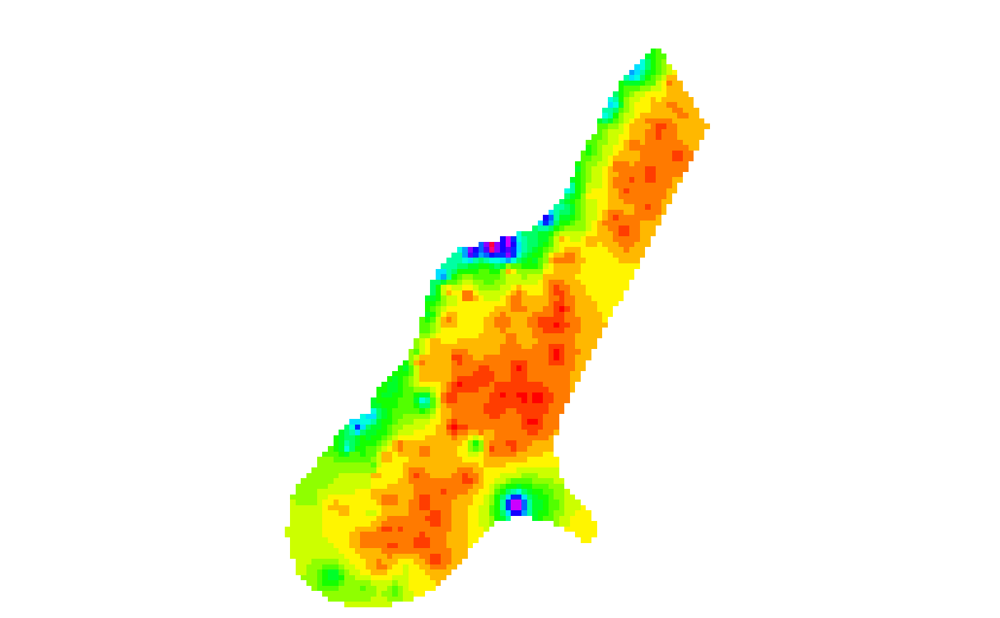

Create a RGB SpatRaster
make.RGB.RdMake a Red-Green-Blue SpatRaster from a single layer
Usage
make.RGB(x, col=grDevices::rainbow(25), breaks=NULL, alpha=FALSE, colNA="white",
zlim=NULL, zlimcol=NULL, ext=NULL, filename="", ...)Arguments
- x
RasterLayer
- col
A color palette, that is a vector of n contiguous colors generated by functions like rainbow, heat.colors, topo.colors, bpy.colors or one or your own making, perhaps using
colorRampPalette. If none is provided,rev(terrain.colors(255))is used unlessxhas a 'color table'- breaks
numeric. A set of finite numeric breakpoints for the colours: must have one more breakpoint than colour and be in increasing order
- alpha
If
TRUEa fourth layer to set the background transparency is added- colNA
color for the background (
NAvalues)- zlim
vector of lenght 2. Range of values to plot
- zlimcol
If
NULLthe values outside the range of zlim get the color of the extremes of the range. If zlimcol has any other value, the values outside the zlim range get the color ofNAvalues (see colNA)- ext
SpatExtent. Can be used to spatially subset the area covered to a region of interest
- filename
character. Output filename
- ...
options for writing files as in
writeRaster
Examples
r <- rast(system.file("ex/elev.tif", package="terra"))
x <- make.RGB(r)
plot(x)
